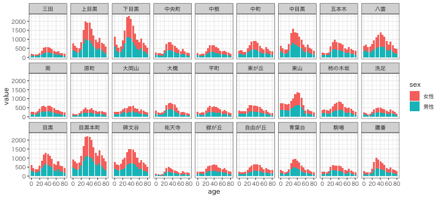

Rによるデータ前処理実習2020
東北大学 生命科学研究科 進化ゲノミクス分野 特任助教
(Graduate School of Life Sciences, Tohoku University)
(Graduate School of Life Sciences, Tohoku University)
- 入門1: 前処理とは。Rを使うメリット。Rの基本。
- 入門2: データ可視化の重要性と方法。
- データ構造の処理1: 抽出、集約など。
- データ構造の処理2: 結合、変形など。
- データ内容の処理: 数値、文字列、日時など。
- 実践: 現実の問題に対処してみる。
2020-10-17 東京医科歯科大学 M&Dタワー 情報検索室1
https://heavywatal.github.io/slides/tmd2020/
最終回: 実践してみよう
- コンピュータ環境の整備
- データの取得、読み込み
- 探索的データ解析
- 前処理、加工 (地味。意外と重い) 👈本実習の主題
- 可視化、仮説生成 (派手！だいじ！)
- 統計解析、仮説検証 (みんな勉強したがる)
- 報告、発表

好きなデータをいじくり倒してみよう
- 自分がこれから解析したいデータ (もし手元にあれば)
- Rやパッケージに付属のデータ (のうちtidyじゃないもの)
VADeath,anscombe,economics
- 何か適当なパブリックデータ
- data.go.jp: データカタログサイト
- IT DASHBOARD: 内閣官房
- e-Stat: 政府統計の総合窓口
- DATA.GOV: U.S. Government’s open data
- 気象庁
- 目黒区オープンデータ: 「地域・年齢別人口」とかいい感じ
- 「こうしたい」「うまくいかない」「もっといじるとしたら」 など気軽に質問してください
実演: 目黒区オープンデータ
「地域・年齢別人口」CSVをダウンロードして、読み込む
# infile = http://www.city.meguro.tokyo.jp/opendata/131105_population_20170401.csv
infile = "131105_population_20170401.csv"
raw_df = readr::read_csv(infile)
print(raw_df)
都道府県コード又は市区町村コード 地域コード 都道府県名 市区町村名 調査年月日 地域名 総人口 男性 女性 0-4歳の男性 0-4歳の女性 5-9歳の男性 5-9歳の女性 10-14歳の男性 10-14歳の女性 15-19歳の男性 15-19歳の女性 20-24歳の男性 20-24歳の女性 25-29歳の男性 25-29歳の女性 30-34歳の男性 30-34歳の女性 35-39歳の男性 35-39歳の女性 40-44歳の男性 40-44歳の女性 45-49歳の男性 45-49歳の女性 50-54歳の男性 50-54歳の女性 55-59歳の男性 55-59歳の女性 60-64歳の男性 60-64歳の女性 65-69歳の男性 65-69歳の女性 70-74歳の男性 70-74歳の女性 75-79歳の男性 75-79歳の女性 80-84歳の男性 80-84歳の女性 85歳の男性以上 85歳の女性以上 不詳者の男性 不詳者の女性 世帯数 備考
<dbl> <dbl> <chr> <chr> <date> <chr> <dbl> <dbl> <dbl> <dbl> <dbl> <dbl> <dbl> <dbl> <dbl> <dbl> <dbl> <dbl> <dbl> <dbl> <dbl> <dbl> <dbl> <dbl> <dbl> <dbl> <dbl> <dbl> <dbl> <dbl> <dbl> <dbl> <dbl> <dbl> <dbl> <dbl> <dbl> <dbl> <dbl> <dbl> <dbl> <dbl> <dbl> <dbl> <dbl> <dbl> <dbl> <dbl> <lgl>
1 131105 111 東京都 目黒区 2017-04-01 駒場一丁目 3995 2027 1968 65 63 85 68 52 51 70 63 156 109 231 160 215 169 202 157 170 175 165 149 114 123 78 105 80 99 126 122 66 107 63 74 48 67 41 107 0 0 2421 NA
2 131105 112 東京都 目黒区 2017-04-01 駒場二丁目 557 267 290 6 8 7 7 13 10 9 9 16 17 31 19 21 20 21 16 26 19 17 25 18 20 16 16 11 12 15 25 15 16 8 11 10 19 7 21 0 0 337 NA
3 131105 113 東京都 目黒区 2017-04-01 駒場三丁目 779 403 376 15 11 14 12 16 10 18 11 26 15 28 18 28 15 34 26 35 34 28 43 34 27 21 26 24 24 24 29 20 25 13 18 13 15 12 17 0 0 415 NA
4 131105 114 東京都 目黒区 2017-04-01 駒場四丁目 1537 736 801 23 35 35 28 31 29 47 35 101 89 70 62 49 47 52 65 43 68 54 68 55 64 34 41 32 34 35 46 26 31 23 19 16 19 10 21 0 0 876 NA
--
85 131105 364 東京都 目黒区 2017-04-01 八雲四丁目 2104 969 1135 56 47 52 47 38 35 34 40 57 54 50 74 56 76 80 104 99 109 73 92 81 83 48 66 43 57 68 67 54 47 24 37 35 42 21 58 0 0 965 NA
86 131105 365 東京都 目黒区 2017-04-01 八雲五丁目 2818 1354 1464 82 53 83 75 65 64 65 61 85 55 90 87 92 103 112 133 117 146 115 128 103 110 84 99 63 73 76 59 37 64 32 47 34 46 19 61 0 0 1316 NA
87 131105 371 東京都 目黒区 2017-04-01 東が丘一丁目 4439 2049 2390 104 90 100 83 108 93 94 124 108 120 131 155 165 186 169 186 190 193 164 195 144 193 130 137 104 109 115 136 81 87 53 81 44 79 45 143 0 0 2193 NA
88 131105 372 東京都 目黒区 2017-04-01 東が丘二丁目 2974 1292 1682 66 63 63 41 47 51 57 37 65 191 138 235 134 174 113 131 93 126 99 126 101 104 77 83 54 56 46 79 44 48 43 39 22 41 30 57 0 0 1667 NA
実演: 目黒区オープンデータ
ggplotしたくなる形に変形
tidy_df = raw_df %>%
select("地域名", matches("の.+性$")) %>%
rename(place = 地域名) %>%
mutate(place = str_replace(place, "\\S丁目", "")) %>%
group_by(place) %>%
summarize(across(everything(), sum)) %>%
ungroup() %>%
pivot_longer(-place, names_to = "category") %>%
separate(category, c("age", "sex"), sep = "の") %>%
filter(str_detect(age, "\\d")) %>%
mutate(age = parse_number(age)) %>%
print()
place age sex value
<chr> <dbl> <chr> <dbl>
1 三田 0 男性 105
2 三田 0 女性 102
3 三田 5 男性 80
4 三田 5 女性 69
--
915 鷹番 75 男性 143
916 鷹番 75 女性 204
917 鷹番 80 男性 107
918 鷹番 80 女性 179
実演: 目黒区オープンデータ
作図してみる
tidy_df %>%
ggplot(aes(age, value)) +
geom_col(aes(fill = sex)) +
facet_wrap(~ place, nrow = 3L) +
theme_bw(base_family = "HiraginoSans-W3")

Reference
- R for Data Science — Hadley Wickham and Garrett Grolemund
- https://r4ds.had.co.nz/, Paperback, 日本語版書籍
前処理大全 — 本橋智光
RユーザのためのRStudio[実践]入門 (宇宙本) — 松村ら
- Official documents:
- tidyverse, ggplot2, dplyr, tidyr, readr, tibble, stringr,
- Older versions
- 「Rにやらせて楽しよう — データの可視化と下ごしらえ」 岩嵜航 2018
- 「Rを用いたデータ解析の基礎と応用」石川由希 2019 名古屋大学
- 「Rによるデータ前処理実習」 岩嵜航 2019 東京医科歯科大